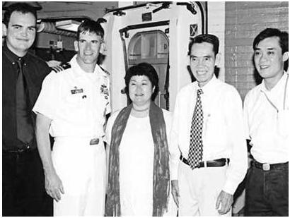

MỞ ĐẦU
Lần đầu tiên tôi gặp Phạm Xuân Ẩn là vào tháng 7/2001 tại Nhà hàng hải sản Song Ngư nằm trên con phố nhộn nhịp Sương Nguyệt Ánh. Hôm đó bạn tôi là Giáo sư James Reckner, Giám đốc Trung tâm Việt Nam tại Đại học Texas, mời tôi dùng bữa tối. Cùng dự có khoảng 20 người ngồi quanh một chiếc bàn dài và khá hẹp. Cách bố trí chỗ ngồi khiến tôi chỉ có thể trò chuyện được với hai người ngồi kề hai bên hoặc với người ngồi đối diện. Nhưng tôi, một từ tiếng Việt bẻ đôi cũng không biết. Cả đám người dự tiệc chỉ có hai học giả người Việt Nam thì lại ngồi hai đầu bàn và đều không nói được tiếng Anh. Các ghế quanh bàn đều có người ngồi cả trừ mỗi chiếc ghế đối diện với tôi là để trống.
Tôi ngán ngẩm vừa bắt đầu nghĩ rằng bữa tối nay lại là một cuộc tra tấn dài dằng dặc đây. Cùng lúc đó, tôi thấy mọi người đang ngồi quanh bàn đều đứng cả dậy để chào một người đàn ông Việt Nam dáng thanh mảnh đến dự chung bữa tối với chúng tôi. Tôi đoán người này trạc gần 70 tuổi. Ở ông toát lên một phong cách nhẹ nhàng, khiêm tốn. Tôi nghe Jim (tên gọi tắt của James Reckner - ND) nói: "Xin chào tướng Ẩn, chúng tôi rất hân hạnh có ông cùng tham dự". Ngay sau đó, ông Phạm Xuân Ẩn ngồi xuống ghế đối diện tôi. Thấy vị tướng này trả lời Jim bằng tiếng Anh, tôi bèn giới thiệu nhanh về mình là một giáo sư dạy Đại học California - Davis. Ông Phạm Xuân Ẩn nghe tôi tự giới thiệu như vậy thì mắt ông bỗng sáng lên. Vị tướng này nói: "Ông từ California đến! Tôi đã từng có thời sống ở đó và học đại học ở Costa Mesa đấy. Đó là thời kỳ hạnh phúc nhất trong cuộc đời tôi".
Trong suốt hai tiếng đồng hồ sau đó, Phạm Xuân Ẩn và tôi đã nói chuyện với nhau về rất nhiều chủ đề, từ chuyện ông học hai năm ở Trường Đại học Orange Coast, chuyên ngành báo chí đến chuyện ông đi khắp nước Mỹ; những điều ông học được; và chuyện ông khâm phục nhân dân Mỹ. Phạm Xuân Ẩn nói với tôi rằng ông đã từng đến Davis thời kỳ thực tập tại báo Sacramento Bee. Phạm Xuân Ẩn kể lại lòng tốt của chủ bút Elenor McClatchy. Ông khoe đã được gặp Thống đốc California Edmund G. "Pat" Brown tại một hội nghị dành cho các biên tập viên những tờ báo của các trường đại học ở Sacramento. Phạm Xuân Ẩn rạng lên một niềm tự hào khi ông kể với tôi về người con trai cả của ông tên là Phạm Xuân Hoàng Ân, gọi theo tiếng Anh là Ân Phạm, cũng đã từng học ngành báo chí Đại học North Carolina ở Chapel Hill, Hoa Kỳ. Vừa qua, Phạm Ân đã lấy thêm một bằng cử nhân luật tại Đại học Luật Duke.
Chỉ chạm đũa một chút xíu vào các món ăn, trong suất bữa tiệc ông luôn hút thuốc lá. Phạm Xuân Ẩn hỏi về công việc nghiên cứu hiện nay của tôi. Vào thời điểm đó, tôi đang viết một cuốn sách về những cuộc đàm phán bí mật tại Paris giữa Henry Kissinger và đối thủ Cộng sản Bắc Việt Nam của ông ta là Lê Đức Thọ. Đó là thời kỳ Nixon còn làm Tổng thống. Ông Phạm Xuân Ẩn liền hào hứng đưa ra những phân tích tinh tế và chi tiết về các cuộc đàm phán đó, cung cấp cho tôi những thông tin mới và cách nhìn mới mẻ.
Trong lúc nghe ông nói, tôi bỗng nhớ lại mình đã từng đọc về một phóng viên của Tạp chí Time rất được kính nể - người mà sau này trở thành một điệp viên của miền Bắc Việt Nam. Tôi ngờ ngợ rằng người đang ngồi ăn tối với tôi đây chính là nhà báo đó.
Suốt cả buổi tối hôm ấy, Phạm Xuân Ẩn không hề nói một lời nào về nghề tình báo của ông mà chỉ nói nhiều về một nghề khác, nghề phóng viên cho Hãng tin Reuters và Tạp chí Time. Ông nói say sưa về nghề nghiệp với những tình cảm yêu quí dành cho nhiều người bạn đồng nghiệp Mỹ. Phạm Xuân Ẩn nhắc tới tên của những nhà báo nổi tiếng nhất thời đại như Robert Shaplen, Stanley Karnow, Frances Fitzgerald, Robert Sam Anson, Frank McCulloch, David Halberstam, Henry Kamm, và Neil Sheehan. Ông nói với tôi rằng bạn bè của ông không chỉ là những người làm báo mà bao gồm cả người của CIA như Lou Conein, đại tá Edward Lansdale, cựu Giám đốc CIA William Colby - người từng là chỉ huy trưởng CIA ở Sài Gòn. Phạm Xuân Ẩn cũng nhắc tới tên nhiều nhà chính trị và tướng lĩnh của chính quyền Sài Gòn như Trần Văn Đôn, Bùi Diễm, Dương Văn Minh hay còn gọi là Minh "Lớn" - người sau này trở thành Tổng thống cuối cùng của Chính quyền Sài Gòn, và cựu Thủ tướng, phó Tổng thống Nguyễn Cao Kỳ - người thường tìm đến ông Phạm Xuân Ẩn để nhận được những lời khuyên về cách huấn luyện chó và gà chọi như thế nào.
Dường như Phạm Xuân Ẩn biết tất cả những nhân vật tai to mặt lớn trong thời kỳ chiến tranh. Khi chia tay nhau tối hôm đó, Phạm Xuân Ẩn trao cho tôi tấm danh thiếp của ông trên đó in hình một con chó chăn cừu Đức tại một góc, còn góc kia in hình một con gà trống.- ông bảo tôi ngày mai gọi điện thoại cho ông để tiếp tục câu chuyện về các cuộc đàm phán Paris. Sau bữa tối hôm đó, một người bạn của tôi tên là Lê Khanh làm việc cho Trung tâm Việt Nam tại Trường Đại học Công nghệ Texas Tech cho biết người mà tôi vừa nói chuyện đúng 8 tiếng đồng hồ tại bữa tiệc chính là Phạm Xuân Ẩn, thiếu tướng Quân đội Nhân dân Việt Nam. Thiếu tướng Phạm Xuân Ẩn từng được nhận bốn Huân chương Giải phóng, sáu Huân chương Chiến sĩ vẻ vang, và được phong danh hiệu Anh hùng lực lượng vũ trang Việt Nam.
Tôi rất tò mò muốn biết liệu Lê Khanh có cảm thấy căm thù đối với một người đã từng không chỉ là kẻ thù, mà còn là người từng sống một cuộc đời giả dối dường như phản bội lại nhiều người ở miền Nam Việt Nam hay không ông Khanh bảo rằng trong thời kỳ chiến tranh, ông không hề biết ông Phạm Xuân Ẩn. Ông Khanh cũng không biết phải ứng xử thế nào khi cách đây vài năm ông được một người bạn của cả ông và ông Phạm Xuân Ẩn mời đi uống cà phê với ông Ẩn. Ông Khanh nhận thấy Phạm Xuân Ẩn là một người khiêm nhường và đầy cá tính - một người mà chưa bao giờ, dù chỉ một lần, tỏ ra kiêu ngạo của kẻ thắng trận.
Ông Khanh dùng từ "thân thiện và cởi mở" để nói về Phạm Xuân Ẩn và cố làm cho tôi hiểu là Phạm Xuân Ẩn sống một cuộc đời rất bình dị.
Cả Phạm Xuân Ẩn và Lê Khanh đều bị mất mát trong chiến tranh. Lê Khanh phải bỏ đất nước mà đi vào ngày 30/4/1975. Phạm Xuân Ẩn mất một người em trai là Phạm Xuân Hoà chết trong một vụ máy bay trực thăng rơi năm 1964. Phạm Xuân Hoà ngày đó làm thợ máy cho không lực Việt Nam Cộng hoà.
Ông Ẩn cũng không có được điều mà ông mơ ước một nước Việt Nam thống nhất có thể mang lại. Thật trớ trêu, ông Lê Khanh thì được tự do đi lại một cách thường xuyên từ nơi ông ở tại Lubbock, bang Texas đến thành phố Hồ Chí Minh trong những chuyến thăm kéo dài cùng với gia đình mình. Tướng Phạm Xuân Ẩn, người anh hùng của Cách mạng, thì lại chưa bao giờ rời Việt Nam đi thăm viếng bạn bè hoặc thành viên gia đình của mình ở bên Mỹ. Cả Phạm Xuân Ẩn và Lê Khanh đều hiểu rõ những mất mát của nhau; mối quan hệ giữa hai người này là minh chứng cho sự hoà hợp giữa những người yêu nước ở hai bên chiến tuyến.
Khi tôi gọi cho ông vào sáng hôm sau, ông Ẩn gợi ý ngay chúng tôi nên gặp nhau ở tiệm cà phê Givral.
Trong thời gian chiến tranh, tiệm cà phê Givral nằm đối diện Khách sạn Continental và nằm trong tầm nghe của toà nhà Quốc hội trước đây. Tiệm này từng là nơi tụ tập của cánh nhà báo, cảnh sát, và quan chức chính phủ. Đây chính là nơi những tin tức được tung ra, được kiểm chứng và là nơi mọi người săn tìm những thông tin nóng nhất trong ngày. Nơi đây là cỗ máy sản xuất tin đồn, thường được gọi đùa là "Đài phát thanh Catinat" vì tiệm cà phê này toạ lạc trên con phố mà thời Pháp có tên là Rue de Catinat. Sau năm 1954, con phố này được đổi tên thành đường Tự do và sau năm 1975 lại được đổi tên thành phố Đồng khởi. Mặc dù thời gian với biết bao thay đổi như vậy, ông Phạm Xuân Ẩn vẫn được mệnh danh là Tướng Givral vì chính tại tiệm cà phê này, ông có thể thu lượm được những thông tin mới nhất trong ngày. Mỗi khi đến đây, ông Phạm Xuân Ẩn thường dắt theo một con chó Đức to và rất trung thành được đặt tên là King. Chiếc xe hơi Renault màu xanh lá cây của ông thường đỗ ngay trước cửa tiệm.
Hai năm tiếp theo cho đến khi Phạm Xuân Ẩn ốm nặng, ông và tôi thường gặp nhau tại tiệm cà phê Givral. Tự dưng hình thành nên thói quen mỗi lần gặp nhau bao giờ tôi cũng đến trước, chọn một bàn bên cửa sổ. Trong lúc ngồi chờ ông Ẩn tôi xem lại phần ghi chép của mình, đọc lại những câu hỏi. Phạm Xuân Ẩn đến sau trên một chiếc xe gắn máy cũ kỹ màu xanh. Sau khi nhận những lời chào nồng nhiệt từ phía các nhân viên nhà hàng, ông đi thẳng tới chỗ bàn tôi đang ngồi. Những giờ tiếp theo trong ngày, chúng tôi làm việc theo kiểu tôi nêu câu hỏi rồi ghi chép phần Phạm Xuân Ẩn giải thích về những sự nhạy cảm chính trị và lịch sử. Thỉnh thoảng ông lại đặt điếu thuốc lá trên tay xuống, cầm tập ghi chép của tôi lên và viết những tên riêng hoặc những câu giúp tôi nắm được ý ông muốn nói. Khi tôi hỏi ông đã mệt chưa, Phạm Xuân Ẩn thường gợi ý gọi đồ ăn trưa rồi tiếp tục làm việc. Nói chuyện chỉ một lúc với ông tôi đã nhận thấy David Greenway, một người bạn của Phạm Xuân Ẩn đã đúng khi nói: "Ông Ẩn đã giúp tôi nhận ra rằng đi Việt Nam càng nhiều, tôi càng hiểu biết ít về Việt Nam".
Năm 2003, sau năm thập kỷ hút thuốc lá, Phạm Xuân Ẩn mắc bệnh phổi rất nặng. Ông Ẩn là người cực kỳ mê tín. Từ năm 1955 ông đã bắt đầu hút loại thuốc lá Lucky Strikes. Khi đó, một người bạn Mỹ của ông đã dạy ông cách nuốt khói, đồng thời đảm bảo với ông rằng Hãng thuốc Lucky Strikes sẽ mang đến cho ông nhiều may mắn. Phạm Xuân Ẩn nói: "Tôi đã hút thuốc lá 52 năm rồi. Giờ đây tôi đang phải trả giá cho điều đó. Hút thuốc lá liên tục trong bằng ấy năm mà tôi chỉ bị bệnh phổi trong có 3 năm là thắng lợi chứ". Giống như hầu hết người dân Việt Nam, chuyện tướng số đóng vai trò lớn trong cuộc đời Phạm Xuân Ẩn. Sinh ra ngày 12/9/1927 thuộc cung Xử nữ nằm trong 6 dấu cung Hoàng đạo, trong đó chỉ có một nữ thần, nên ông Ẩn được nữ Chúa che chở cho suốt đời. Do vậy, ông tự cảm thấy mình có trách nhiệm phải bảo vệ phụ nữ.
Tôi đến thành phố Hồ Chí Minh vào ngày Phạm Xuân Ẩn phải đi viện. Một tờ báo địa phương đưa tin ám chỉ rằng ông chỉ còn sống được một thời gian ngắn nữa. Tôi điện thoại cho Phạm Xuân Ẩn, ông cũng xác nhận kết quả chẩn đoán là rất xấu. Trước khi rời thành phố Hồ Chí Minh, tôi đã viết cho ông một lá thư riêng, trong đó bày tỏ hy vọng rằng chúng tôi còn có dịp lại gặp nhau ở tiệm cà phê Givral. Tôi nói đùa với Phạm Xuân Ẩn rằng với tư cách một điệp viên, ông đã đánh lừa thần chết nhiều lần rồi, nên lần này chắc ông chưa thể đi gặp Diêm Vương được đâu. Sau đó tôi chẳng biết ông Ẩn có đọc lá thư đó của tôi không.
Vài tháng sau, tôi nhận được tin Phạm Xuân Ẩn đã xuất viện về nhà phục hồi sức khoẻ. Ông đã cám ơn tôi về lá thư, đồng thời nói rằng ông mong gặp tôi để tiếp tục cuộc trao đổi. Phạm Xuân Ẩn bảo tôi nhớ mang cho ông ba cuốn sách mà ông thích đọc. Thời gian ngắn sau đó, tôi trở lại thành phố Hồ Chí Minh, nhưng vì ông Ẩn còn yếu nên tôi đề nghị được gặp ông tại nhà riêng của ông. Đó là ngôi nhà ở số 214 phố Lý Chính Thắng, trước kia là nhà riêng của một nhà ngoại giao Anh. Hai chúng tôi vừa ngồi uống trà, vừa trò chuyện trong nhiều giờ. Xung quanh là những tủ sách báo quý giá và hàng chục loại chim luôn hót véo von, vài con gà trống thỉnh thoảng lại cất tiếng gáy, những con gà chọi thường xuyên được ông huấn luyện, một con chim ó, bể cá, và hai chú chó con thay thế cho con chó berger Đức trước đây.
Cuốn sách tôi viết về cuộc đàm phán Paris đã được xuất bản. Giờ đây tôi muốn lấy câu chuyện về cuộc đời Phạm Xuân Ẩn coi đó như một cửa sổ để giúp hiểu về những sự phức tạp của cuộc chiến tranh. Tôi hỏi Phạm Xuân Ẩn vì sao ông chưa tự viết hồi ký.

Ông Phạm Xuân Ẩn tại một trong nhiều cuộc trao đổi của chúng tôi
Trước đó nhiều năm, Stanley Karnow đã từng khích lệ Phạm Xuân Ẩn viết hồi ký, nhưng ông đã khăng khăng nói rằng do ông nắm giữ quá nhiều bí mật nên sợ viết ra có thể làm hại những người đang còn sống hoặc thân nhân của những người đã khuất.
Phạm Xuân Ẩn chẳng bao giờ tự viết hồi ký về cuộc đời tình báo của mình. Ông cứ khăng khăng cho rằng mình chỉ là một mắt xích nhỏ trong cả một mạng lưới tình báo Cộng sản rộng lớn. Phạm Xuân Ẩn tự coi mình tương tự như một nhà phân tích của CIA chỉ ngồi một chỗ ở Langley đọc tài liệu rồi gửi đi những báo cáo. Khi tôi hỏi liệu tôi có thể viết hồi ký cho ông được không, Phạm Xuân Ẩn trả lời thẳng thừng "Không!". Tuy vậy, cuộc trao đổi của chúng tôi vẫn tiếp tục Tôi đưa ra càng nhiều câu hỏi về những việc ông đã làm trong nghề tình báo, Phạm Xuân Ẩn kể cho tôi nghe càng nhiều. Khi đó, tôi luôn tay ghi chép và bắt đầu ghi âm những cuộc nói chuyện của chúng tôi Phạm Xuân Ẩn vẫn tiếp tục kể.
Thế rồi tôi gặp may. Nhân kỷ niệm 30 năm chiến thắng của Việt Nam trong "Cuộc chiến tranh của Mỹ", Phạm Xuân Ẩn nổi lên như một người anh hùng được tôn vinh ở Việt Nam. Hai cuốn sách chính thức về cuộc đời ông được xuất bản. Cuốn "Phạm Xuân Ẩn: tên người như cuộc đời", đã được trao giải thưởng thể loại sách không hư cấu hay nhất trong năm. Tựa đề cuốn sách là lối chơi chữ trong tiếng Việt, vì tên của Phạm Xuân Ẩn có nghĩa là che giấu, bí mật, ẩn nấp, vì vậy nên thực tế cuộc đời của ông cũng giống như tên của ông vậy?
Phạm Xuân Ẩn đưa cho tôi cuốn sách và lời nhận xét: "Đây là cuốn sách nhỏ cho ông biết cách mạng Việt Nam đem lại may mắn vì sự may mắn tốt hơn những kỹ năng". Cuốn sách nói về Phạm Xuân Ẩn trong nghề tình báo cũng như những cái nhìn sâu vào tính cách của ông. Tôi trở thành bạn bè với tác giả cuốn sách, nhà báo Nguyễn Thị Ngọc Hải - người đã giúp tôi trong việc nghiên cứu tìm hiểu bằng cách dàn xếp những cuộc phỏng vấn với các thành viên trong mạng lưới tình báo của Phạm Xuân Ẩn. Trong cuốn sách của mình, tác giả Nguyễn Thị Ngọc Hải cho rằng ông Ẩn không làm điều gì sai trái. Giống như George Washington, ông không biết nói dối, và giống như Abraham Lincoln, ông trưởng thành từ một con người bình thường trở thành một vĩ nhân. Một cuốn sách khác cũng do hai nhà báo viết tên sách "Phạm Xuân Ẩn: Một vị tướng tình báo" đã được dịch ra tiếng Anh và tiếng Tây Ban Nha, trở thành cuốn sách bán chạy nhất đối với khách du lịch tại các hiệu sách ở Hà Nội và thành phố Hồ Chí Minh. Tôi bắt đầu sử dụng một số chi tiết mới nêu trong hai cuốn sách này để làm cơ sở cho các câu hỏi của tôi đối với Phạm Xuân Ẩn.
Ông Phạm Xuân Ẩn lại phải vào nằm viện. Lần này ông phải thở máy suốt 5 ngày liền. Vợ ông, bà Thu Nhàn, theo truyền thống của người Việt Nam, đã đem tất cả tài liệu, sổ tay, ảnh, và những thứ khác đặt vào trong một chiếc rương để nếu như ông chết sẽ được chôn cùng với những bí mật của mình. Trong khi ông đang nằm viện, bản dịch tiếng Anh của cuốn "Phạm Xuân Ẩn: Một vị tướng tình báo" đã được đăng tải nhiều kỳ trên một tờ báo Việt Nam và có thể đọc được trên Internet. Kỳ cuối cùng của loạt bài này có tựa đề "Sự vĩ đại" nói về đánh giá chính thức đối với Anh hùng Phạm Xuân Ẩn. "Nếu có thể rút ra được điều gì từ cuộc đời của ông, thì đó chỉ có thể là bài học về chủ nghĩa yêu nước. Người Việt Nam luôn luôn là những người yêu nước nồng nàn như thế, nhưng không kẻ ngoại xâm nào đề cao yếu tố này của dân tộc Việt Nam. Những kẻ xâm lược cũng không thể hiểu được đối thủ của chúng và vì vậy mà chúng đã phải chuốc lấy những thất bại. Nếu hiểu được điều đó chúng đã chẳng bao giờ dám có âm mưu xâm lược Việt Nam. Phạm Xuân Ẩn là một nhà tình báo vĩ đại".
Một lần nữa, Phạm Xuân Ẩn tránh được cuộc đi gặp Diêm Vương. Ông xuất viện trở về nhà với hai lá phổi chỉ còn làm việc được 35% công suất. Trông ông ốm yếu khủng khiếp. Tuy nhiên, đầu óc, trí nhớ, và cả khiếu hài hước trong ông vẫn sắc lẹm như thường.
Ông nói đùa với tôi về cái đầu mới cắt tóc của ông đã bị cạo trọc như tóc của các binh lính, nói rằng cắt tóc như vậy là cần thiết vì ông yếu quá, không thể giơ nổi cánh tay lên để chải tóc nữa. Phạm Xuân Ẩn thường phàn nàn rằng vợ ông, bà Thu Nhàn, đã làm cho đống tài liệu của ông lộn xộn cả lên, mà ông thì hiện nay ốm yếu quá, không thể sắp xếp lại cho gọn gàng đúng chỗ được.
Tôi hỏi Phạm Xuân Ẩn ông nghĩ gì về sự nổi tiếng mới đây của ông? Phạm Xuân Ẩn trả lời: "Đến bây giờ thì mọi người đã hiểu tôi chẳng làm điều gì sai trái cả và tôi chẳng còn sống được bao lâu nữa: Tôi đã không phản bội. Đã có sự cố gắng làm thay đổi cách nói chuyện của tôi trong suốt một năm và cách nghĩ của tôi trong thời gian dài hơn thế nữa. Người ta có thể làm gì? Tôi không thể bị bắn. Người ta nói với tôi rằng không thích cách nói của tôi và rằng tôi khác lắm. Thậm chí đến nay, cũng không ai biết tôi có bao nhiêu thông tin và tôi biết những gì. Thậm chí, tôi đã phải chứng minh sự trung thành của mình, do vậy mà đến nay, mọi người có thể đã hiểu tôi hơn. Tôi đã dám đang ở Mỹ mà bỏ để trở về nước, và đây là một bài học cho thanh niên đất nước tôi. Tôi được coi là một tấm gương tốt cho thế hệ trẻ về lòng yêu nước".
Trong suốt cuộc nói chuyện kéo dài hai giờ đồng hồ của chúng tôi, bên cạnh Phạm Xuân Ẩn luôn có một bình ôxy. Ông bảo tôi rằng ông muốn nằm xuống một lúc để được thở dưỡng khí. Ông mời tôi xem lướt qua thư viện của ông. Tôi tìm thấy bản gốc cuốn sách Sổ tay địa lý Đông Dương được ấn hành từ năm 1943 do một nhà tình báo hải quân Anh viết. Hồi tháng 4/1975, Phạm Xuân Ẩn đã từng sử dụng cuốn sách này để giúp đỡ nhiều gia đình bạn bè (phía đối phương) chạy trốn bằng cách chỉ cho họ những dòng hải lưu và những đường biển thuận lợi. Trên giá sách của ông, tôi thấy có cả tờ Tạp chí New York Times số ra ngày 1/12/1963 ngay sau khi Tổng thống John F. Kennedy bị ám sát. Tờ tạp chí này đề cập đến một chủ đề vốn là một trong những vấn đề rắc rối nhất mà Tổng thống mới của Hoa Kỳ Lyndon Baines Johnson đang phải đương đầu giải quyết. Tại góc dưới bên phải tờ tạp chí có tấm hình ba người đàn ông mặc quân phục đi cùng với một nhà báo Việt Nam miệng đang ngậm một điếu thuốc lá, còn tay thì đang ghi chép. Chú thích của bức ảnh viết: "Một trong những việc làm đầu tiên của Tổng thống Johnson là khẳng định lại chính sách của Hoa Kỳ viện trợ cho chính quyền Nam Việt Nam chống lại các du kích Cộng sản. Đây một cố vấn quân sự Mỹ và một sĩ quan Nam Việt Nam đang xem xét khẩu súng của một du kích Việt cộng vừa bị bắt". Phóng viên chiến trường trẻ tuổi David Halberstam đã gửi cho Phạm Xuân Ẩn bài báo này và đề bên dưới bức ảnh ông Ẩn dòng chữ: "Liệu Phạm Xuân Ẩn có phải là một vấn đề lớn không hay?"
Tôi lần giở từng cuốn sách trên giá, đọc những dòng chữ mà bạn bè của ông Phạm Xuân Ẩn đã đề tặng. Nhà báo Neil Sheehan: "Tặng Phạm Xuân Ẩn - người bạn của tôi, người đã vinh dự phục vụ một cách xuất sắc sự nghiệp báo chí và sự nghiệp của đất nước ông - hãy nhận ở tôi lời chào thân thiết nhất". Laura Palmer: "Tặng Ẩn yêu quí và thân thiết của tôi, người đã hiểu rằng các chính phủ thì chỉ đến rồi đi, nhưng bạn bè thì ở lại mãi mãi. Bạn là một người thầy lớn, một người bạn vĩ đại luôn chiếm một phần trong trái tim tôi. Hãy nhận ở tôi tình bạn yêu quí và một niềm vui tìm thấy bạn sau tất cả những năm tháng này". Gerald Hickey: "Tặng Phạm Xuân Ẩn - một người bạn chân chính trải qua bao thời gian trắc trở, chúng ta cùng chung một thời chiến tranh. Hãy nhận ở tôi lời thăm hỏi rất thân thiết". Nayan Chanda: "Tặng Phạm Xuân Ẩn, một nhà yêu nước quả cảm, một người thầy, người bạn vĩ đại. Hãy nhận ở tôi lời biết ơn". Robert Shaplen: "Tặng Phạm Xuân Ẩn, hiện tại cuối cùng rồi cũng đã đuổi kịp được quá khứ? Chúng ta có những ký ức để mà chia sẻ và ấp ủ - Nhưng trên hết là một tình bạn dài lâu". Stanley Karnow: "Tặng Phạm Xuân Ẩn, người anh em thân thiết của tôi - người đã giúp tôi hiểu Việt Nam trong nhiều năm. Hãy nhận ở tôi lời thăm hỏi nồng ấm".
Đáng chú ý là những lời đề tặng trên hai cuốn niên giám 1958 và 1959 của Trường Đại học Orange Coast College, nơi Phạm Xuân Ẩn đã từng học trước đây.
Lời của hai người bạn học, Lee Meyer: "Ẩn - rất thú vị khi tôi được gặp bạn. Chắc Ẩn biết rằng đối với bạn sẽ rất quan trọng khi trở về Tổ quốc của mình - bạn đã có một sự hiểu biết to lớn về báo chí và triết học. Lúc nào bạn cũng sẽ bên tôi, trong mọi suy nghĩ của tôi". Rosam Rhodes: "Tạm biệt Ẩn - nơi tôi gặp bạn và chúng ta cùng làm việc với nhau trong suốt năm qua thật tuyệt vời. Hy vọng bạn sẽ thực hiện được điều mơ ước của mình trong thế giới này - có lẽ chúng ta sẽ lại gặp nhau - khi mà cả hai đều đã trở thành những nhà báo nổi tiếng".
Tôi quyết định liều một lần cuối cùng đề nghị Phạm Xuân Ẩn để cho tôi viết sách về ông. Tôi bèn van nài Phạm Xuân Ẩn, hy vọng được ông chấp nhận với tôi một điều rằng cuốn hồi ký về cuộc đời ông phải để cho một nhà sử học như tôi viết ra, chứ không chỉ các nhà báo Việt Nam viết về ông, vì có thể ở Việt Nam vẫn còn áp dụng kiểm duyệt. Tôi bèn lật ngửa con bài cuối cùng của mình bằng cách nói rằng sẽ là thích hợp nếu một giáo sư đại học ở California - một bang của nước Mỹ mà tại đây, ông Ẩn từng có đầy ký ức đẹp đẽ - viết hồi ký về cuộc đời Phạm Xuân Ẩn. Đó là cuộc đời của một nhà tình báo chiến lược trong chiến tranh, về những ngày ông hoạt động báo chí, về những năm tháng ông sống trên đất Mỹ, về những tình bạn của ông - đó là câu chuyện về một cuộc chiến tranh, một thời kỳ hoà hợp dân tộc và hoà bình. Tôi không dám ép Phạm Xuân Ẩn phải tiết lộ nhiều những bí mật tình báo mà ông đang nắm giữ, vì biết rằng ông chẳng bao giờ làm điều đó.
Phạm Xuân Ẩn nhìn thẳng vào mắt tôi rồi nói: "OK". Ông nói với tôi rằng ông rất tôn trọng những cuốn sách trước đó của tôi về Việt Nam và ông hy vọng những người trẻ ở Mỹ có thể học từ cuộc đời của ông về cuộc chiến tranh Việt Nam, về chủ nghĩa yêu nước và về sự khâm phục của ông đối với nhân dân Mỹ. Ông hứa sẽ hợp tác với tôi, nhưng với điều kiện là ông bảo lưu quyền được nói rằng: "Điều này nói ra chỉ để cho ông hiểu toàn cảnh bức tranh, chứ không được viết vào sách, vì nó có thể làm đau lòng con cháu của người đó và xin đừng bao giờ kể câu chuyện đó với ai hoặc nhắc đến tên người ấy".
Trong suốt ngày làm việc cuối cùng của tôi với ông, Phạm Xuân Ẩn luôn lo ngại rằng những điều ông nói ra có thể gây hậu quả ngược lại không phải đối với ông mà là đối với những người khác. Lúc đó, tôi rất trân trọng và thực hiện tất cả những đề nghị này của ông Phạm Xuân Ẩn.
Phạm Xuân Ẩn nói với tôi rằng ông không muốn đọc bản thảo trước khi cuốn sách của tôi được xuất bản. Ông dẫn ra một câu thành ngữ Việt Nam "Văn mình, vợ người". Ông khẳng định nếu đọc sách của tôi ông sẽ tìm thấy những đoạn mà ông không thích, nhưng ông không muốn là người chỉ ngồi rồi đưa ra đánh giá này nọ về những kết luận mà người viết tiểu sử cho mình đưa ra. Vì ông đã nhận không tự viết về câu chuyện cuộc đời mình. Ông Phạm Xuân Ẩn và tôi đã thoả thuận với nhau như vậy. Đổi lại, tôi có điều kiện thuận lợi không ai sánh bằng để tìm hiểu về người điệp viên này.
Tôi tự thấy mình phải làm việc rất khẩn trương. Phạm Xuân Ẩn đã yếu lắm rồi và thường hay nói đến cái chết, đại loại như "Tôi đã sống quá lâu rồi ông ạ". Mỗi khi nói câu này, gương mặt ông lại rạng lên một nụ cười.
Sau khi đã được phép của Phạm Xuân Ẩn rồi, tôi quyết định đến gặp ông càng nhiều càng tốt. Chẳng ai có thể biết khi nào thì ông vĩnh viễn ra đi. Vào thời điểm cảm thấy ngày ra đi của mình đang đến rất gần, Phạm Xuân Ẩn bỗng tỏ ra cởi mở hơn, cung cấp cho tôi những tài liệu quí giá mà ông thu được trong thời kỳ chiến tranh. Đó là hàng chục bức ảnh cá nhân và những trao đổi thư từ, tiếp cận với những thành viên trong mạng lưới của ông, những người bạn của ông ở Mỹ và quan trọng nhất là ông cho tôi lật giở đến tận đáy chiếc tủ gia đình đựng tài liệu của ông. Chiếc tủ bằng sắt cũ kỹ và han gỉ trong đó lưu giữ hàng chục tài liệu ẩm mốc.
Cuối năm 2005, Phạm Xuân Ẩn đưa ra hai quyết định chứng tỏ tôi là người được chấp nhận viết hồi ký cho ông. Truyền hình thành phố Hồ Chí Minh bắt đầu sản xuất một bộ phim truyền hình dài 10 tập về cuộc đời của ông. Viết kịch bản cho bộ phim tài liệu này là Nguyễn Thị Ngọc Hải - tác giả của cuốn hồi ký được giải thưởng. Tôi được nhóm làm phim phỏng vấn. Phạm Xuân Ẩn yêu cầu đoàn làm phim phải quay hình kéo dài một giờ buổi làm việc của ông với tôi và với một người Việt Nam viết hồi ký cho ông.
Người Việt Nam đó là Hải Vân - một nhà báo từng viết cuốn "Phạm Xuân Ẩn: Một vị tướng tình báo". Để dàn cảnh, đoàn làm phim bố trí để tôi lên xe hơi đi từ khách sạn nơi tôi ở đến nhà Phạm Xuân Ẩn rồi bắt đầu bấm máy từ đoạn ông ra đón tôi tại cổng trước.
Tối hôm đó, tôi dùng bữa cùng đoàn làm phim. Hải Vân và tôi trao đổi nhiều chuyện về Phạm Xuân Ẩn.
Tôi ngờ rằng cả hai chúng tôi đều chưa để lộ những con át chủ bài của mình. Tôi cũng đã nói chuyện một số lần với Lê Phong Lan, chủ nhiệm bộ phim tài liệu này. Lê Phong Lan đặc biệt tò mò về thời gian Phạm Xuân Ẩn sống bên Mỹ. Sau này, có lần tôi hỏi Phạm Xuân Ẩn vì sao ông cứ khăng khăng muốn tôi phải tham gia vào bộ phim tài liệu nói trên. Ông ném sang tôi một cái nháy mắt ám chỉ điều gì đó mà tôi không hiểu. Phạm Xuân Ẩn biết rằng tôi đang tiến hành nghiên cứu, lục giở những tài liệu tại một số trung tâm lưu trữ và đã tìm thấy một số tư liệu mới về cuộc đời ông. Phạm Xuân Ẩn cũng đã biết tôi từng phỏng vấn hàng chục người bạn của ông, trong đó có nhiều người là bạn thời còn đang học đại học. Tôi đã tạo dựng được một cách độc lập sự hiểu biết về ông vượt quá cả những điều mà đất nước ông cho phép. Đó chính là điều mà trong những ngày cuối cùng của cuộc đời mình Phạm Xuân Ẩn mong muốn.
Quyết định thứ hai mang tính chất riêng tư hơn. Phạm Xuân Ẩn bảo tôi cho ông sử dụng nhờ cái máy ghi âm nhỏ xíu của tôi để ghi lại những lời ông muốn gửi cho một số người bạn cũ ở Mỹ. Ông đã yếu quá rồi, không đủ sức để cầm bút hoặc đánh máy chữ, chỉ muốn nói lời cám ơn và tạm biệt đối với một số người bạn của mình. Ông bảo tôi ghi âm ba trong số những đoạn dài (sau này, những đoạn ghi âm đó đã trở thành những tư liệu lịch sử bằng lời có thể kiểm chứng được). Phạm Xuân Ẩn cho phép tôi sử dụng bất cứ điều gì mà ông đã nói để cho tôi có cơ sở hiểu bối cảnh sự kiện, trừ những đoạn mà ông đã dặn tôi rất kỹ trong một buổi làm việc của chúng tôi. Nhưng nếu người trong cuộc cho phép, thì tôi có thể dùng những tư liệu đó. Phạm Xuân Ẩn nhờ tôi chuyển trả lại giúp một số lá thư riêng mà gia đình Brandes ở Mỹ đã gửi cho ông hồi những năm 1950. Brandes là gia đình Mỹ đầu tiên gây cho Phạm Xuân Ẩn ấn tượng về sự hào phóng và thiện chí của nhân dân Mỹ. Cả ông Phạm Xuân Ẩn và gia đình Brandes đều đã đồng ý và cho phép tôi sử dụng những lá thư đó để đưa vào cuốn sách này.
Giống như rất nhiều người trẻ tuổi tham gia cách mạng để chống lại thực dân Pháp, Phạm Xuân Ẩn có tầm nhìn vì một sự công bằng xã hội và một nền độc lập của Việt Nam. Ông đấu tranh vì một nền tự do và chống lại sự đói nghèo. Là một nhà tình báo chân chính, ông không mưu cầu danh vọng hoặc tiền tài cho mình, mà tất cả chỉ vì nhân dân của nước ông.
Phạm Xuân Ẩn không hề muốn mình là một điệp viên, mà ông làm điều đó chẳng qua chỉ vì nghĩa vụ đối với dân tộc mình. Mặc dù vậy, ông vẫn nhận nhiệm vụ tình báo một cách nghiêm túc, cho dù nghề đó không mang lại cho ông nhiều niềm vui. Những điều ông mơ ước về cách mạng trở thành vấn đề lý tưởng, nhưng tôi tin rằng động cơ cuộc sống của Phạm Xuân Ẩn chính là những mục đích cao cả của chủ nghĩa yêu nước Việt Nam.
Đảng cộng sản Việt Nam đã tuyển mộ Phạm Xuân Ẩn làm tình báo viên với bí số X6 - một điệp viên đơn tuyến trực thuộc mạng lưới tình báo H.63 ở Củ Chi.
Mạng lưới này là đơn vị được phong tặng danh hiệu Anh hùng Lực lượng vũ trang Giải phóng miền Nam Việt Nam. Đảng đã chỉ thị cho ông chọn nghề báo làm vỏ bọc tốt nhất. Đảng gom góp tiền để cử Phạm Xuân Ẩn sang Mỹ và khéo léo tạo ra một lý lịch giả để hỗ trợ cho vỏ bọc của ông. Trong hồ sơ của Đảng, ông Phạm Xuân Ẩn được mang bí danh là Trần Văn Trung nhằm giữ bí mật cho ông. Phạm Xuân Ẩn nói rằng đó là vận mệnh của ông, đồng thời cho rằng người ta không thể không đấu tranh với cuộc sống.
Khi còn trẻ, ông đã nghiên cứu Voltaire và tâm đắc câu nói của nhà khoa học này: "Bạn cần phải khác biệt để được đớn đau và vui sướng". Phạm Xuân Ẩn cho biết, khi đó ông mới 17 hoặc 18 tuổi, nên đã làm theo tất cả những điều ông được chỉ thị làm.
Phạm Xuân Ẩn trở thành tình báo viên khi các nhà lãnh đạo Đảng Cộng sản nhận thấy rằng Mỹ đang chuẩn bị ráo riết để thay thế thực dân Pháp ở Việt Nam. Lại một lần nữa, dân tộc Việt Nam không được tự quyết định tương lai của mình. Lợi ích sống còn của Mỹ khi đó là không để Việt Nam rơi vào tay chủ nghĩa Cộng sản. Chiến tranh lạnh, sự cấm vận, học thuyết đôminô chẳng có lợi ích gì đối với Việt Nam, chi mang lại chết chóc và sự tàn phá mà thôi.
Sứ mạng của nhà tình báo Phạm Xuân Ẩn là cung cấp các báo cáo tình báo chiến lược về những kế hoạch chiến tranh của Mỹ và sau đó gửi vào "rừng" cho chỉ huy cấp trên. Là một nhà phân tích, Phạm Xuân Ẩn lấy mẫu hình điệp viên CIA Sherman Kent, tác giả cuốn "Tình báo chiến lược đối với chính sách toàn cầu của Mỹ" - một cuốn sách nổi tiếng không thể thiếu được đối với dân tình báo chiến lược. Phạm Xuân Ẩn biết đến Kent và nhận được những bài học đầu tiên của Kent về nghề tình báo từ đại tá CIA huyền thoại Edward Lansdale và các cộng sự bí mật của đại tá. Đó là những người Mỹ đã đến Việt Nam từ năm 1954. Trên cơ sở những mối quan hệ tiếp xúc ban đầu, Phạm Xuân Ẩn đã xây dựng họ thành những nguồn thạo tin và tốt nhất ở Sài Gòn. Mục đích cuối cùng là cung cấp cho Hà Nội những thông tin cần thiết nhất để nắm bắt những kế hoạch từng trận đánh và chiến thuật của Mỹ. Trong suốt giai đoạn đầu của quá trình gia tăng sự có mặt của Mỹ ở Việt Nam, Phạm Xuân Ẩn là một tình báo viên quý giá nhất so với tất cả các tình báo viên hoạt động ở miền Nam. Thông tin tình báo của ông có giá trị cao về tính chính xác, bởi vì ông đã thiết lập được một vỏ bọc chắc chắn gần như không thể lộ được. Những báo cáo tin tình báo đầu tiên của ông chính xác đến mức tướng Giáp đã có lần nói rằng: "Giờ đây, chúng ta đã có mặt ngay trong phòng tác chiến của Mỹ".
Phạm Xuân Ẩn là người đã giúp cho các nhà báo Mỹ hiểu được sự phức tạp trong tình hình chính trị ở Việt Nam. Ông được các giới chính trị, quân sự, tình báo của cả hai bên đánh giá cao, bởi vì ông có khả năng phân tích về Mỹ cho phía Việt Nam. Thời kỳ 1965-1975, tên Phạm Xuân Ẩn luôn được đưa vào danh sách những phóng viên được phép đưa tin các sự kiện do Bộ Chỉ huy và viện trợ quân sự Mỹ ở Việt Nam (MACV) tổ chức. Ông chưa bao giờ phải làm cái việc ăn cắp tài liệu mật, vì ông luôn được các nguồn tin của mình cung cấp những tài liệu mật để phân tích giúp cho họ những tình hình quân sự và chính trị to lớn hơn.
Có lẽ nguồn tin cơ sở tốt nhất của Phạm Xuân Ẩn trong toàn bộ những tháng năm làm tình báo của ông chính là Tổ chức Tình báo Trung ương miền Nam Việt Nam (CIO). Đây là một cơ quan được tổ chức rập khuôn theo mẫu hình Cục tình báo Trung ương Mỹ (CIA). Phạm Xuân Ẩn từng tư vấn cho việc lập ra CIO và luôn duy trì mối quan hệ thân thiết với những người bạn của ông làm việc trong tổ chức anh báo này. Ông cho biết: "Họ coi tôi là một người đồng nghiệp, một người bạn và bất cứ khi nào tôi cần gì thì chỉ cần nêu yêu cầu là được cung cấp ngay". Dường như không một nhân viên tình báo nào của chế độ Sài Gòn nhìn thấu qua được vỏ bọc của Phạm Xuân Ẩn.
Ông đã qua mắt được tất cả các nhân viên tình báo không chỉ của chế độ Sài Gòn, mà cả của Mỹ. Ông Bùi Diễm - cựu Đại sứ của chế độ Sài Gòn tại Hoa Kỳ, nhớ lại: "Chúng tôi thường dùng bữa trưa với nhau tại Brodard và tôi chẳng bao giờ nghi ngờ điều gì cả".
Thật trớ trêu, khi cuộc chiến tranh đã chấm dứt và Việt Nam không còn bị chia cắt nữa, thì lại có một số người trong cơ quan công an Việt Nam tin rằng quan hệ của Phạm Xuân Ẩn với người của tình báo Mỹ và CIO vẫn còn quá thân thiết. Và rằng, người Anh hùng tình báo của họ tồn tại được lâu như vậy là vì đã làm việc cho các bên khác nhau nên rất có thể Phạm Xuân Ẩn là một điệp viên đồng thời cho cả ba cơ quan tình báo. Sự rắc rối đối với Phạm Xuân Ẩn bắt nguồn từ việc ông luôn dùng những lời lẽ thân thiết để nói về những người bạn của mình từng làm việc cho CIA và CIO.
Phạm Xuân Ẩn được đánh giá cao không chỉ vì những tin tức ông thu thập được, mà còn vì sự phân tích hiểu biết của ông về những thông tin đó. Trong nghề tình báo, người ta dùng thuật ngữ xử lý tin để phân tích, đánh giá các thông tin nhằm giúp cho người sử dụng những thông tin đưa ra được những quyết định về chính sách. Phạm Xuân Ẩn là một nhà phân tích sắc sảo, nên ông thường đưa ra rất sớm những nhận định được xử lý từ những bản kế hoạch quân sự phức tạp được ông thể hiện dưới dạng những báo cáo dễ hiểu gửi cho cấp trên của ông.
Thực hiện tất cả những điều đó, Phạm Xuân Ẩn hiểu rằng chỉ cần một sai lầm nhỏ của mình cũng có thể dẫn đến việc ông bị bắt hoặc bị giết. Đề cập đến những năm tháng hoạt động tình báo, Phạm Xuân Ẩn nói: "Người ta có thể nói gì về cuộc sống, khi mà người ta phải luôn luôn chuẩn bị sẵn sàng hy sinh".
Phạm Xuân Ẩn bắt đầu một nhiệm vụ như thế nhưng sứ mạng của ông có lẽ chỉ kết thúc khi đất nước ông được thống nhất hoặc là khi ông bị bắt. Một người bạn tình báo của Phạm Xuân Ẩn là Lou Conein làm việc cho CIA đã khuyên ông hãy xé toang màn bí mật về những năm tháng đó, luôn giữ cho mình tự kiểm soát được và không bao giờ được mắc sai lầm dù là nhỏ. Sự thán phục của Conein là sự thán phục "của một sĩ quan tình báo chuyên nghiệp đối với một người cũng đóng vai trò tương tự. Người ta không thể không thán phục một con người rất tài giỏi trong nghề nghiệp của mình".
Điều làm cho câu chuyện về cuộc đời Phạm Xuân Ẩn trở nên không thể tin được đó là việc rõ ràng ông rất thích sống trong vỏ bọc của mình, thích làm một phóng viên để điều mơ ước về tự do báo chí trở thành hiện thực trong cách nhìn của ông về cách mạng.
Trong suốt hơn hai mươi năm, Phạm Xuân Ẩn sống trong vỏ bọc, nhưng vẫn hy vọng điều mà ông hằng mơ ước sẽ trở thành sự thật. Đó là điều ông mơ ước được làm phóng viên cho một tờ báo của nước Việt Nam thống nhất. Ông khâm phục và kính trọng những người Mỹ mà ông đã từng gặp ở Việt Nam, cũng như những người ông gặp trong thời kỳ còn ở bên Mỹ. Ông tin rằng hiện nay, những người Mỹ đó chẳng làm gì ở đất nước của ông. Laura Palmer đã từng viết về Phạm Xuân Ẩn: "Những người bạn của ông là tài sản quí giá trong trái tim ông".
Lúc đầu đối với tôi, không có gì khó khăn hơn là viết về cuộc đời ông Phạm Xuân Ẩn mà phải cố gắng hiểu được những tình bạn đó của ông. Để tồn tại, Phạm Xuân Ẩn phải lừa dối hay đơn giản là không nói gì với những người thân thiết nhất của ông về nhiệm vụ bí mật mà ông đang đảm nhiệm. Thế nhưng, không một ai trong số những người bạn của Phạm Xuân Ẩn thù ghét ông một khi họ được cho biết rằng ông là một tình báo viên cộng sản. Phạm Xuân Ẩn phải là người như thế nào thì mới có thể xây dựng được những tình bạn bền lâu trên một nền tảng giả dối, mà khi sự giả dối đó bị bóc trần vẫn không ai trong số những người bạn ấy cảm thấy bị phản bội.
Chỉ có rất ít người cảm thấy họ đã bị sử dụng làm nguồn cung cấp thông tin để cho Phạm Xuân Ẩn viết ra những báo cáo tình báo chiến lược gửi ra Hà Nội.
Phạm Xuân Ẩn có niềm tin tưởng rằng ông không bao giờ tham gia vào bất cứ hành động nào phản bội lại nhân dân Mỹ. Đến tận những ngày cuối cùng của cuộc đời mình, Phạm Xuân Ẩn vẫn khăng khăng cho rằng không một người bạn Mỹ nào của ông lại bị ảnh hường xấu về mặt con người lẫn nghề nghiệp do những việc ông làm. Ngược lại, hầu hết những người bạn của ông đều được hưởng lợi từ sự giúp đỡ của ông.
Khoảng những năm 1970 (nếu không phải là trước đó nữa), gần như tất cả những người bạn Mỹ của Phạm Xuân Ẩn đều xem xét cuộc chiến tranh Việt Nam dưới nhãn quan của ông. Cứ cho rằng Phạm Xuân Ẩn trên thực tế đã phản bội những người bạn của ông; và cứ cho rằng những người bạn Mỹ này đã thông cảm với những gì thuộc những hiểu biết cơ bản của ông về cuộc chiến tranh, hầu hết những người bạn của ông đều không có lý do gì để thất vọng khi nhiều năm sau đó họ biết rằng Phạm Xuân Ẩn là một điệp viên. Tôi quan tâm đến việc sứ mạng dưới vỏ bọc chắc chắn như của ông đã không thể không gây ra những căng thẳng về mặt đạo đức bên trong nhà tình báo. Phạm Xuân Ẩn luôn luôn sống trong lo sợ và thường xuyên phải đối mặt với sự tự nghi ngờ liên quan đến việc sử dụng bạn bè của mình vào mục đích tình báo. Việc Phạm Xuân Ẩn đã giải quyết mâu thuẫn bế tắc đó như thế nào sẽ là một phần trong bức màn bí ẩn có thực trong cuộc đời của ông.
Dù nhìn nhận ở góc độ nào về cuộc đời của một trùm tình báo được thừa nhận như Phạm Xuân Ẩn, thì cũng cần xem xét một thực tế rằng có rất nhiều người khác - cả người Mỹ lẫn người Việt, phải chịu hậu quả của các hoạt động tình báo Cộng sản. Các thành viên trong mạng lưới tình báo H.63 của Phạm Xuân Ẩn đã từng "giết nhiều lính Mỹ và nguỵ, phá huỷ nhiều xe tăng, xe bọc thép và máy bay chiến đấu phản lực của kẻ thù". Vấn đề đánh giá tác động của những hành động tình báo cụ thể là điều không mấy dễ dàng. Tuy nhiên, nếu Phạm Xuân Ẩn trên thực tế đúng là một điệp viên Cộng sản vĩ đại nhất của cuộc chiến tranh và những lời ca ngợi thành tích của mạng lưới tình báo "anh hùng" của ông là chính xác, thì một cách gián tiếp, những hành động của ông đã gây ra tổn thất và chết chóc cho nhiều người.
Sau chiến tranh, Phạm Xuân Ẩn thấy cô đơn. Ông không còn liên hệ với những người bạn Mỹ và cũng không còn làm việc như một nhà báo. Hàng tháng ông đi họp chi bộ. "Chi bộ của tôi ngày càng ít người đi vì có những người bạn của tôi qua đời. Nhưng tôi vẫn đi họp đều đặn mỗi tháng một lần và để nói những chuyện đại khái như là tuần này tôi có giáo sư Larry Berman đến thăm. Chúng tôi đã nói chuyện với nhau về cuộc đua ngựa và những chuyện khác". Phạm Xuân Ẩn vừa nói vừa mỉm cười.
Khi tôi hỏi liệu người ta có thật sự quan tâm đến việc ông kể về cuộc gặp gỡ giữa chúng tôi hay không, Phạm Xuân Ẩn trả lời: "Những điều tôi nói mọi người đều đã biết cả rồi. Những điều tôi nói lại chẳng qua chỉ là để thử thách xem tôi có trung thực và trung thành hay không mà thôi. Do vậy, cách tốt nhất là nói tất cả những gì người ta đã biết. Ngoài ra, ai cũng biết tôi là người thẳng thắn, và người ta biết rõ tôi cảm thấy thế nào về tất cả những việc này. Tôi thì già quá rồi, không thể thay đổi được, còn họ thì vì thận trọng mà cũng không thể thay đổi được. Dù vậy, sau mỗi năm tình hình lại được cải thiện tốt hơn. Có lẽ trong 50 năm tới thì tình hình sẽ là OK.
Phạm Xuân Ẩn vẫn là người có cảm tình với Mỹ trong suốt cả cuộc đời mình. Ông đã rất vui khi sống được đến ngày chứng kiến một chương mới mở ra trong quan hệ giữa Hoa Kỳ và Việt Nam. Theo lời mời của cả Đại sứ Hoa Kỳ tại Việt Nam Raymond Burghardt và Tổng lãnh sự Hoa Kỳ Emi Lynn Yamauchi, Phạm Xuân Ẩn lên thăm tàu hải quân Mỹ USS Vandeglift hồi tháng 9/2003. Cùng thăm tàu có các quan chức cao cấp khác nhân dịp lần đầu tiên, một tàu hải quân Mỹ cập cảng Việt Nam kể từ khi chiến tranh kết thúc năm 1975. Một trong những tài sản đáng giá của Phạm Xuân Ẩn là tấm hình ông chụp chung với Tổng lãnh sự Yamaguchi và thuyền trưởng Richard Rogers trên tàu Vandegrift do cơ quan Tổng lãnh sự Mỹ tặng. Kể lại chuyện này cho tôi nghe, Phạm Xuân Ẩn nói hôm ấy ông rất tự hào, đã sống được đến ngày đầy vui sướng hoà hợp và hợp tác giữa Hoa Kỳ và Việt Nam: "Giờ thì tôi có thể thanh thản ra đi được rồi. Tôi đã phục vụ đất nước tôi, nhân dân tôi, và sự tái thống nhất Tổ quốc". Sau này con trai Phạm Ân của ông nói với tôi: "Cháu mừng vì ba cháu đã từng trải nghiệm như vậy. Điều đó chứng tỏ rằng tiến trình bình thường hoá đang tiến triển tốt đẹp và điều này có ý nghĩa rất lớn đối với ba cháu".
Hôm lên tàu Vandegrift, Phạm Xuân Ẩn mặc thường phục nên chỉ có mỗi một người trong phái đoàn Việt Nam trên tàu nhận ra ông. Một vị đại tá Việt Nam tiến lại gần ông và hỏi bằng tiếng Việt:
"Xin lỗi, có phải ông là tướng Phạm Xuân Ẩn không ạ?".
Phạm Xuân Ẩn nghe vậy liền ngửng mặt lên đáp "Vâng, đúng là tôi".
Vị đại tá liền đáp: "Rất hay được gặp ông", rồi trong lúc Phạm Xuân Ẩn đang đứng giữa rất nhiều quan chức cấp cao Mỹ, vị đại tá quay sang phía Phạm Xuân Ẩn hỏi hài hước:
"Vậy ông là tướng của bên nào?".
Không một chút do dự, Phạm Xuân Ẩn liền đáp: "Của cả hai bên".
Lúc đó vị đại tá nhìn có vẻ khó chịu. Phạm Xuân Ẩn nói: "Chỉ là trò đùa thôi mà".
Khi kể lại câu chuyện này cho tôi nghe, ông kết luận:
"Giáo sư thấy đấy, đó chính là lý do vì sao tôi chưa được ra nước ngoài: Người ta vẫn chưa hiểu rõ tôi là người thế nào".

"Giờ thì tôi có thể thanh thản ra đi được rồi", đó là điều ông Ẩn mô tả cảm xúc của mình trên tàu hải quân Mỹ USS Vandegrift tháng 9/2003 (ảnh do Tổng lãnh sự Quán Mỹ tại thành phố Hồ Chí Minh cung cấp).